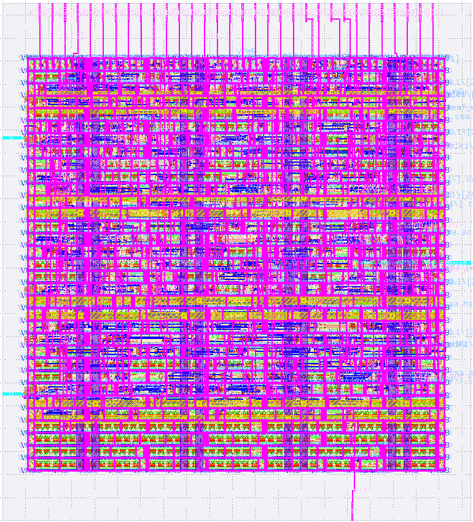

Finite Impulse Response(FIR) Filter
在線性非時變系統(Linear Time-Invariant, LTI)下實現fixed-point FIR Filter電路，透過組合移位暫存器、乘法器、加法器電路實現一個高通濾波器和一個低通濾波器。
Project Details
FIR Filter是一種常見的數位濾波器，用於處理數位信號。它的名稱來自其有限的脈衝響應（Impulse Response），這表示當濾波器受到一個單位的脈衝信號時，它的輸出僅在有限時間內回應，而不是無窮長的時間。
Characteristics of FIR Filter
- 有限脈衝響應：當應用一個有限長的脈衝信號時，FIR濾波器的輸出僅依賴於有限數量的輸入值
- 線性：FIR濾波器是線性的，使其可以將多個FIR濾波器串聯或相加
- 高度彈性：通過調整FIR濾波器的系數，可以實現不同的濾波效果，如低通、高通、帶通或帶阻
Specification
- Includes a High Pass Filter and a Loss Pass Filter
- Filter architecture consist of shift registers、multipliers、adders
- Input signal is represented using fixed-point notation
- Output signal is rounding the decimal part to the nearst integer
- Ensure that the number of cycles between the first input and first output is less than 5 clock cycles
I/O Defination
| Signal Name | Direction | Bit Width | Description |
|---|---|---|---|
| CLK | Input | 1 | Clock signal |
| RESET | Input | 1 | Asynchronous reset signal (active high) |
| IN_VALID | Input | 1 | Asserted when IN_DATA is vaild |
| IN_DATA | Input | 13 | Input data (unsigned number, with the most significant 9 bits as the integer and the least significant 4 bits as the decimal) |
| OUT_VALID | Output | 1 | Asserted when OUT_DATA is vaild |
| X_DATA | Output | 13 | HPF output data (unsigned integer numbers) |
| Y_DATA | Output | 13 | LPF output data (unsigned integer numbers) |
Filter Coefficients
| High-pass filter coefficient | Low-pass filter coefficient | ||||||
|---|---|---|---|---|---|---|---|
| H(0) | 0.43750 | H(6) | 0.87500 | L(0) | 0.84375 | L(6) | 0.50000 |
| H(1) | 0.12500 | H(7) | 0.50000 | L(1) | 0.59375 | L(7) | 0.59375 |
| H(2) | 0.09375 | H(8) | 0.96875 | L(2) | 0.15625 | L(8) | 0.34375 |
| H(3) | 0.03125 | H(9) | 0.87500 | L(3) | 0.28125 | L(9) | 0.37500 |
| H(4) | 0.50000 | H(10) | 0.96875 | L(4) | 0.65625 | L(10) | 0.50000 |
| H(5) | 0.43750 | H(11) | 0.53125 | L(5) | 0.53125 | L(11) | 0.96875 |
General Architecture
FIR濾波器的總體架構可以參考Fig1，架構包括移位暫存器、乘法器和加法器。在本實驗中，輸入訊號使用fixed-point表示法，其中最高有效 9 位是整數部分，且最低有效 4 位是小數部分。濾波器係數可以使用定點表示法表示，最後得到的輸出訊號將小數部分四捨五入到最接近的整數。Achievements Display

CHIP Layout.